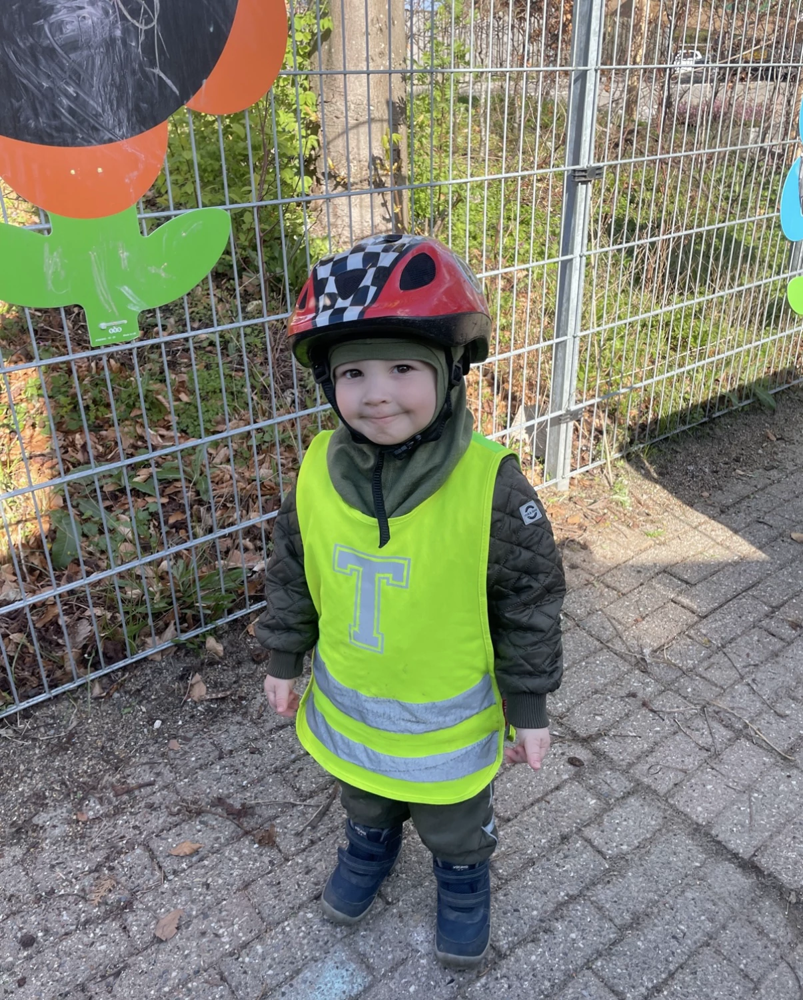
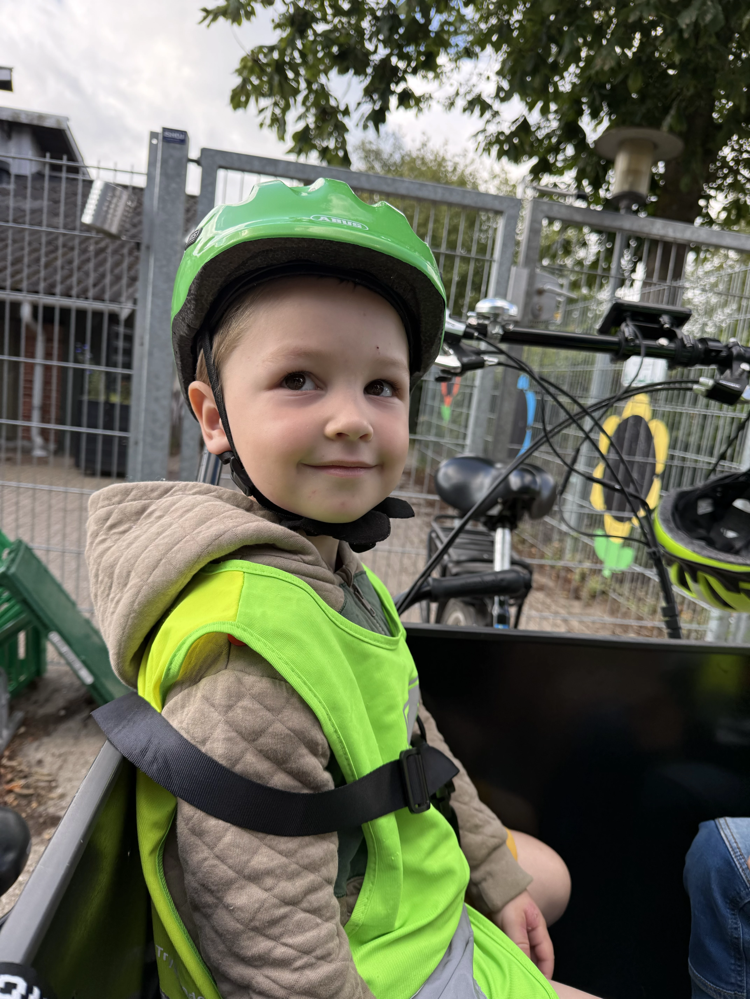

Pædagogmedhjælpernes hverdag
Fra en erfaren pædagogmedhjælpers perspektiv
Hvad laver en pædagogmedhjælper egentlig?
I alle institutioner vil man finde pædagogmedhjælpere. Pædagogmedhjælpere er (typisk) unge mennesker, der holder sabbatår. En pædagogmedhjælpers funktion er, at understøtte pædagogerne i deres arbejde. Det vil sige, at være på børnene, hvis pædagogerne har en anden opgave de skal have udført. Derudover, har en pædagogmedhjælper ikke ansvaret for de "mindre sjove arbejdsopgaver", som eksempelvis at skulle tale med et barns forældre, hvis der har været sket en uheldig situation eller en kontrovers. Det stiller derfor pædagogmedhjælperne tilbage med de "sjove opgaver", som at lege med børnene og følge deres hverdag, trivsel og færdigheder.
Som pædagogmedhjælper, har jeg typisk flere timer sammen med børnene, end en pædagog, da jeg ikke har andre opgaver. Pædagogers andre opgaver omhandler også det der hedder "arbejde om børn", hvor de skal skrive om børnenes udvikling og trivsel (dialogprofiler), afholde forældresamtaler og andre mindre opgaver rundt i huset. Derfor består mit arbejde primært af det, der hedder "arbejde på børn", hvor jeg er sammen med børnene, leger med dem, taler med dem, og egentlig bare er sammen med dem hele dagen. Det kan derfor være en stor fordel for mig som pædagogmedhjælper, at skabe en god forældrekontakt, da jeg kan fortælle om alle de positive og sjove oplevelser et barn har haft, imens en pædagog har ansvaret for at tage sig af de mindre positive oplevelser, hvis der skulle have været en.
Se også:
Mit eventyr som medhjælper
Mine snart tre år som pædagogmedhjælper, har været ubeskrivelige. Jeg har først og fremmest fået sindssygt meget erfaring og viden med mig, som jeg kan gøre stor gavn af en dag, jeg selv bliver forælder. Både de små ting som at skifte en ble, viden om de forskellige børnesygdomme eller at lære en 3 årig at lukke sin jakke, men også de større ting som at løse en konflikt, sætte grænser, og hvordan man skal aflevere sit barn i institution på den bedste måde. Det er erfaring, som er guld værd.
Derudover, har noget af det mest betydningsfulde for mig været, at kunne følge børns udvikling. Når man har været i den samme institution i noget tid, er noget af det største at kunne se tilbage på et barns udvikling, og opdage, hvor langt det barn er kommet i sin udvikling. Børn vokser ekstremt hurtigt, og man når knap nok at se sig om, før at de er blevet store, med stærke holdninger og personligheder. Selvom jeg ikke selv har børn, betragter jeg dem alligevel som "mine børn". Den tryghed, omsorg og nærvær man oplever som medhjælper, er måske det der kan minde om selv at få børn. Du er sammen med de samme børn hver eneste dag i mange timer, og du lærer dem at kende så godt, at de kan føles som ens små bedste venner.
Børn er kendt for at være utrolig ærlige, og jeg har oplevet hundredvis af gange at få helt ondt i maven af latter, hvis et barn har sagt eller gjort noget sjovt. Jeg vil aldrig glemme "mine" børn, og jeg vil forevigt være taknemmelig for alt, mit arbejde har givet mig.
Her er en af "mine" børn og hans udvikling:

Marts 2024

August 2025